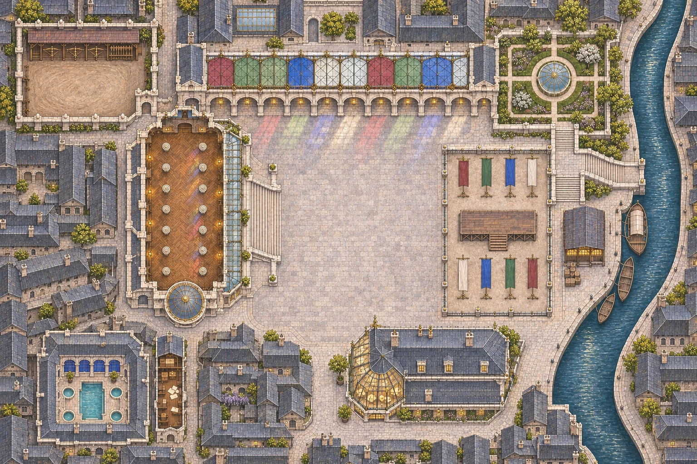

Стеклянная Республика
Карты и фигурки ведущего
Игровой комплект
6 игроков · 7 игроков · 8 игроков
Карта кампании

Поля боя


Герои


Персонажи ведущего


Противники
 Тихий Седьмой комнаты 4Тихий Седьмой комнаты 3Боец дверной команды 1Караульный Палаты 1Боец дверной команды 2Тихий Седьмой комнаты 1Тихий Седьмой комнаты 2
Тихий Седьмой комнаты 4Тихий Седьмой комнаты 3Боец дверной команды 1Караульный Палаты 1Боец дверной команды 2Тихий Седьмой комнаты 1Тихий Седьмой комнаты 2 Караульный Палаты 2Караульный Нити 8Караульный Нити 3Караульный Нити 7Караульный Нити 6Караульный Нити 5Караульный Нити 4Караульный Палаты 2Караульный Нити 2Караульный Нити 1Караульный Палаты 3
Караульный Палаты 2Караульный Нити 8Караульный Нити 3Караульный Нити 7Караульный Нити 6Караульный Нити 5Караульный Нити 4Караульный Палаты 2Караульный Нити 2Караульный Нити 1Караульный Палаты 3 Зенон Карх
Зенон Карх